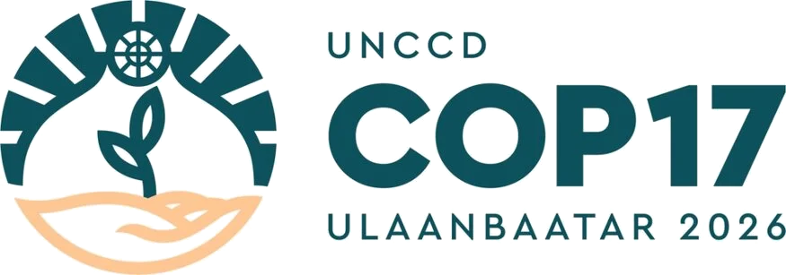

Side Event 299A UNCCD COP17 science–policy conversation
Managing Connectivity of Wind, Water, and Livestock for Dryland Restoration
Connecting landscape processes, restoration practice, pastoral experience, and policy action.
Date22 August 2026
Time13:00–14:30
VenueRoom MET-03 (CSO), Ulaanbaatar
The panel
Click any speaker to visit their profile